Constructing Noisy Training Inputs
t = 0.10My image is a Silent Princess flower screenshot from Breath of the Wild (1000x563, center-cropped to 512x512). It is mostly saturated green with a soft blurry background, and the flower has strong color and edge contrast. Noisy inputs interpolate between noise and the image:
x_t = (1 - t) * eps + t * x1 (t = 0 is noise, t = 1 is the clean image)
Endpoint checks with torch.allclose pass: t = 0 returns the noise and t = 1 returns the image.
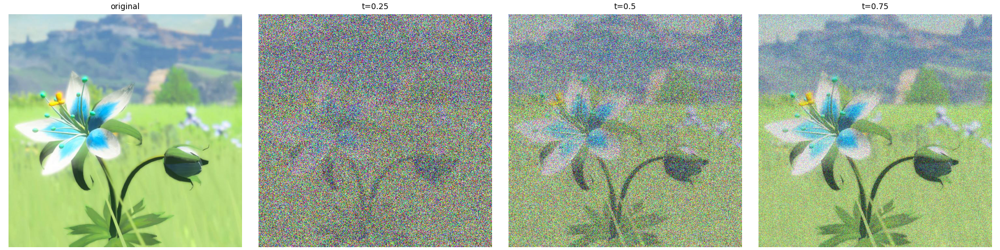
- t = 0.25: almost all noise, only a faint outline of the stems.
- t = 0.50: flower, bud, and background shapes clearly visible but grainy.
- t = 0.75: mostly the image with a light noise layer.
Structure is already recognizable by t = 0.5.
Classical Denoising
t = 0.17Dividing by t restores the image amplitude, and a Gaussian blur then averages out the remaining noise. I picked the best sigma by eye for each t.
x_t / t = x1 + ((1 - t) / t) * eps
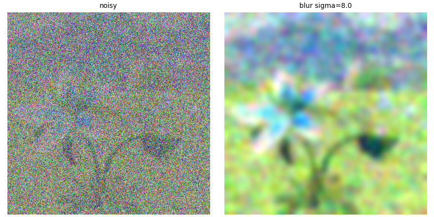
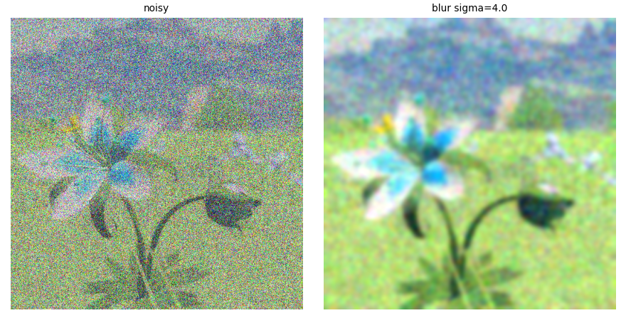
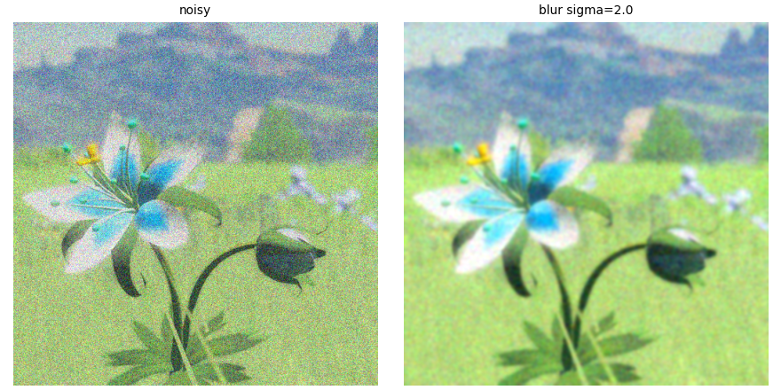
The noise factor after dividing is (1 - t) / t: 3 at t = 0.25 (noise three times stronger than the image), 1 at t = 0.5 (equal strength), and 1/3 at t = 0.75 (noise is weak). As predicted, the closer t is to 0, the larger sigma needs to be to average out the noise.
The tradeoff is that a larger sigma removes more noise but also smears edges and detail. Classical blur has no idea what a flower should look like, so it can only trade noise for blur.
One-Step Denoising
t = 0.24The pretrained model predicts a velocity with the prompt "a high quality photo", and one step jumps straight to t = 1. With the true velocity v = x1 - eps, this gives back x1 exactly. It uses exactly one model prediction per noisy input.
x1_hat = x_t + (1 - t) * v_theta(x_t, t, c)
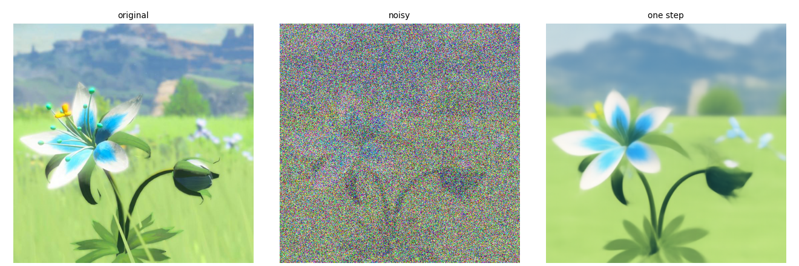
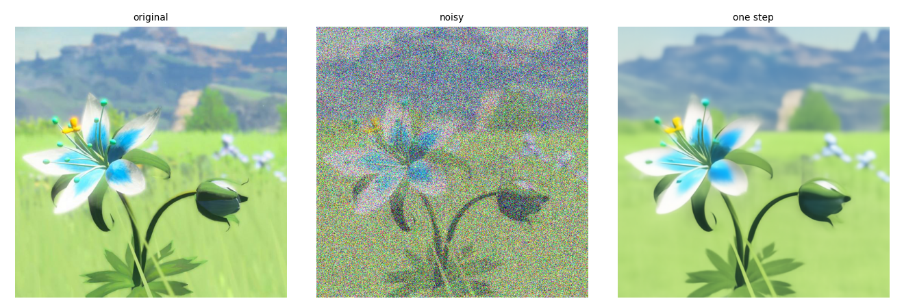
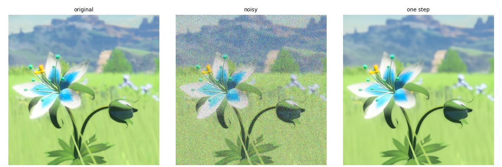
At t = 0.25 the overall layout (flower, bud, stem, leaves, mountains, sky) and colors (blue petal centers, green field) are kept. The teal stamen tips, most of the orange center, and the petal and bud texture are lost, and the background flowers became blue smudges. The result is smooth and slightly blurry, but far better than Gaussian blur at the same noise level.
With high noise the model gives an averaged result: it is an average of all clean images that could plausibly produce this noisy input. Shared features survive and differing details cancel out. With lower noise, finer detail remains.
Visualizing Velocity
t = 0.32I compare the predicted update (1 - t) * v_hat with the ground-truth update (1 - t) * v_gt, where v_gt = x1 - eps. The error map is the per-pixel RMS over RGB, shown with the same color limits in every row.
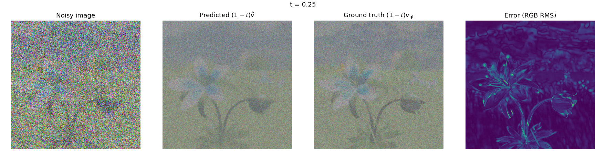
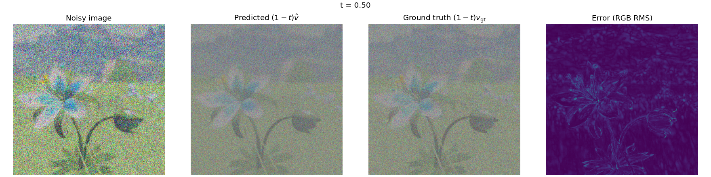
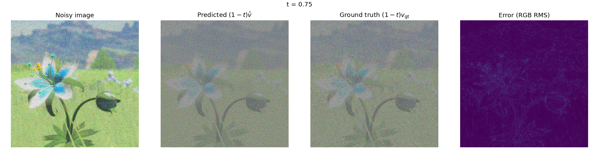
At t = 0.25 the error is brightest on edges and fine detail (stamen tips, petal outlines, bud, leaf edges), and smooth areas like the sky and field are near zero. Both updates look grainy, but the error map has no grain: the predicted and ground-truth noise match so well that the grain cancels in the difference, leaving only differences in image detail.
(1 - t)(v_hat - v_gt) = (x1_hat - x_t) - (x1 - x_t) = x1_hat - x1
So the error heatmap is exactly the per-pixel error of the A.1.3 one-step estimate, which is why the bright spots match the details A.1.3 lost.
Iterative Denoising with Euler Sampling
t = 0.39I denoised the t = 0.50 input with step h = 0.02 (25 updates), recomputing the velocity each step. The final step is shortened to land exactly on t = 1 (h = min(step_size, 1 - t)), with a 1e-9 tolerance against floating point drift.
x_{t+h} = x_t + h * v(x_t, t)
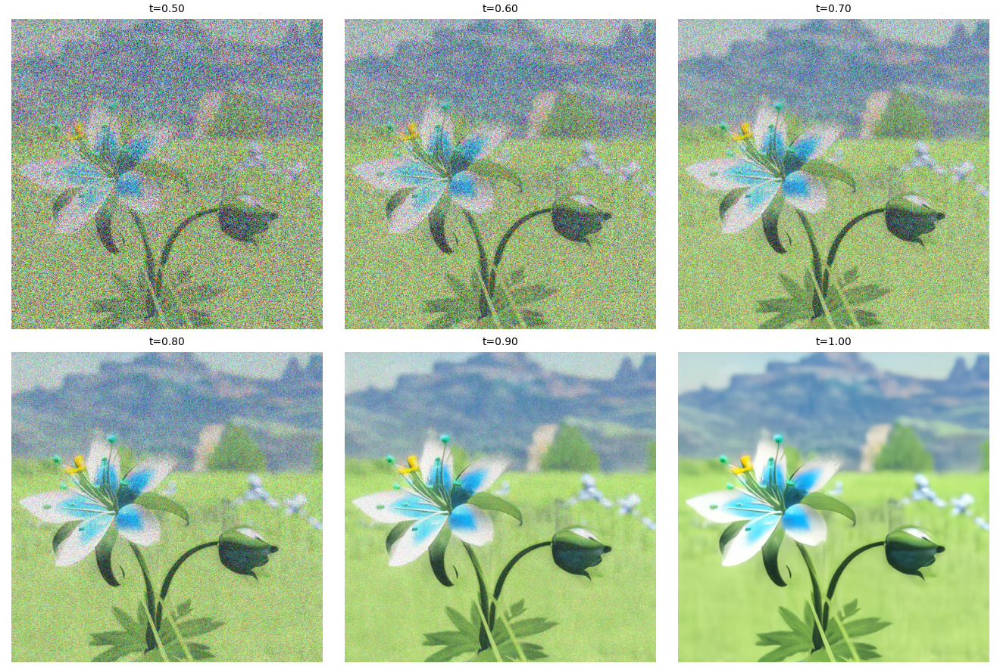
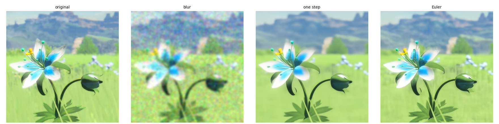
| Method (t = 0.50 input) | Reconstruction MSE |
|---|---|
| Gaussian blur | 0.0122 |
| One step | 0.0040 (lowest) |
| Euler, 25 steps | 0.0047 |
Noise fades gradually with each step. At t = 1.00 the teal stamen tips, yellow-orange center, and crisp petal edges are back, all lost in the one-step result. The field has soft vertical streaking and the background flowers differ slightly: sharp and plausible, but not a pixel-perfect copy.
Lowest MSE is not the same as best looking. Euler has sharper detail, but if a detail is slightly off from the original, MSE penalizes it. One step hedges by spreading uncertain details over all plausible positions, so it is never badly wrong anywhere. A sharp detail placed slightly wrong is penalized twice: where it was drawn but shouldn't be, and where it should be but is missing. Squared error rewards blurry averages over committing to a sharp guess.
Generating Images from Noise
t = 0.46Five independent Gaussian starts (seeds 180 to 184) integrated from t = 0 to 1 with 50 Euler updates and the prompt "a high quality photo".
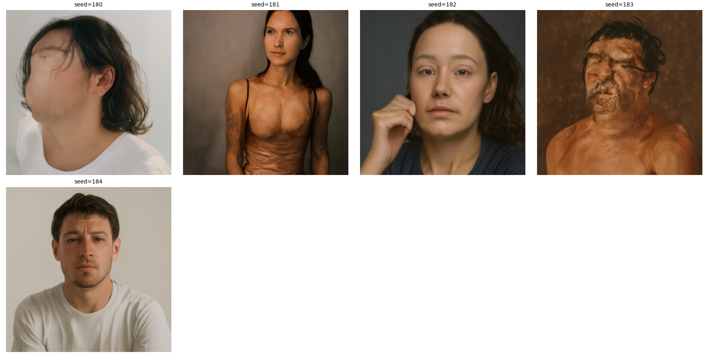
All five seeds produced portraits of people, even though the prompt says nothing about people. Seeds 182 and 184 are plausible, coherent portraits. Seed 181 has a believable face, but the torso has melted skin texture. Seeds 180 and 183 have badly distorted faces (180 is missing features, 183 is melted).
My hypothesis is that a common type of high quality image is a professional portrait shot with one clear subject, so the prompt favors portraits. Many keep only the general shape, silhouette, and color of a person. These samples are the baseline for A.2.1, which reuses the same starting noises.
Classifier-Free Guidance
t = 0.54Both branches are evaluated at the same x and t, with an empty-string null condition. w = 0 gives the ordinary conditional prediction; higher w overcorrects toward the prompt. I used w = 7, h = 0.02, and the same seeds as A.1.6, so the rows compare seed by seed.
v_cfg = v_c + w * (v_c - v_u)
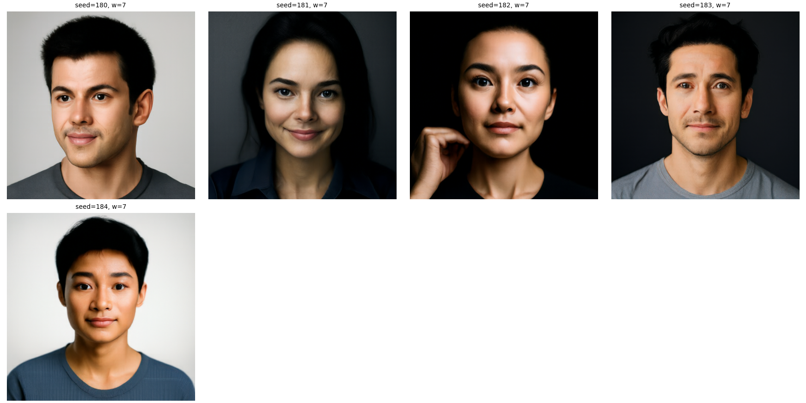
Seeds 180 and 183 went from melted, featureless faces to clean, coherent portraits, and seed 181 lost the odd torso texture. The faces are much more human-like, neutral or smiling, looking at the camera, with detail like wrinkles. Contrast is higher, with more dramatic lighting and several dark studio backgrounds. Seed 182 kept the hand raised to the face, so the same starting noise keeps the rough composition.
But there is no variety: similar smiles, hair color, eye color, and position in the frame. Guidance exaggerates the prompt's push, so every sample is driven toward the model's single most typical "high quality photo." Variety is the sacrifice for image quality.
Image-to-Image Editing
t = 0.61To edit, I build the start point with interpolate(image, noise, t_start) and integrate from t_start to 1 with Euler sampling and CFG ("a high quality photo", w = 7, h = 0.02, the same noise for every t and image). The velocity is passed as a lambda of (x, t) so it is recomputed each step. Each sweep reads left to right, top to bottom, from uncanny to recognizable.
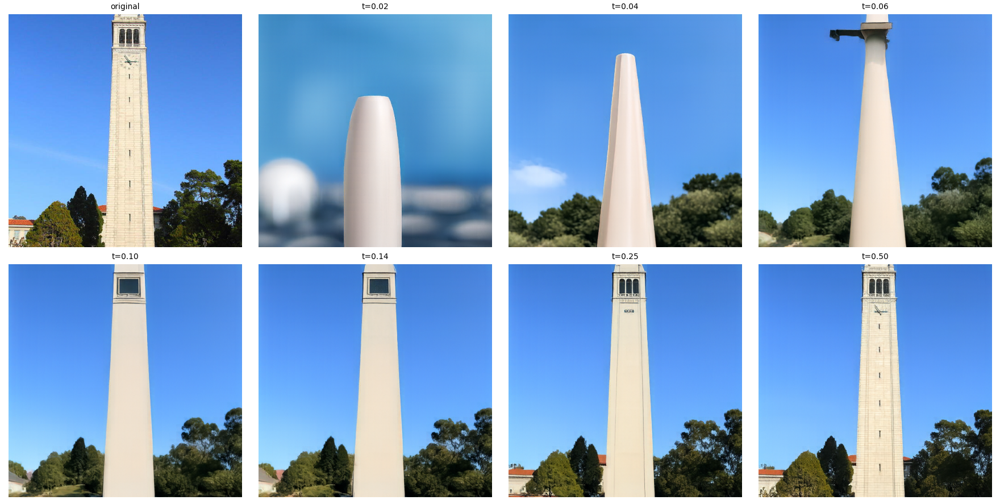
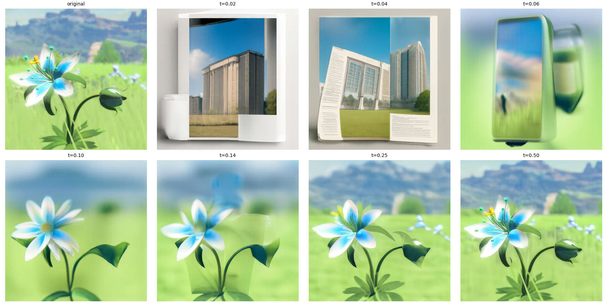
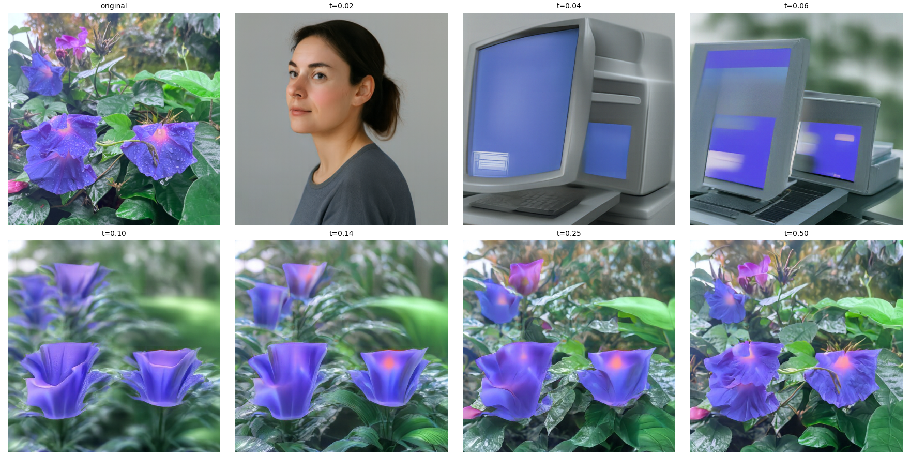
General pattern
- t = 0.02 to 0.06: only color palette and rough layout survive; the model invents a new scene in those colors.
- t = 0.10 to 0.14: the subject comes back, simplified.
- t = 0.25: subject plus mid-level detail.
- t = 0.50: very close to the original, including fine detail.
Campanile: even at 0.02, a tall white shape against blue sky survives; a strong, simple vertical layout is hard to lose. At 0.10 to 0.14 it becomes a plain obelisk, 0.25 has windows, and 0.50 has the clock.
Silent Princess: low t became a picture frame, a magazine, and a phone in the original's blue, white, and green. Low t pulls toward screens, frames, and devices: since only color and layout survive, a blue focus in the center can look like a glowing screen. My hypothesis is that product photos of devices are very common online and often described as "high quality." The game render changed more across the sweep: unrecognizable from 0.02 to 0.06, with odd squarish, screen-like artifacts at 0.10 to 0.14, and close to the original only at 0.25. The model learned from real photos, so the stylized render is less familiar and it keeps trying to "correct" it.
Morning glory: at 0.02 a portrait of a person appears, and at 0.04 to 0.06 computer monitors in the flowers' purple-blue. The sweet spot is t = 0.10, where the model starts generating flowers instead of screens. At 0.10 they are general flowers, not specifically mine; at 0.14 details appear that make them more like my flowers.
Text-Guided Image Editing
t = 0.68Same three inputs and seven start times as A.3.1, with a new prompt embedding in place of "a high quality photo."
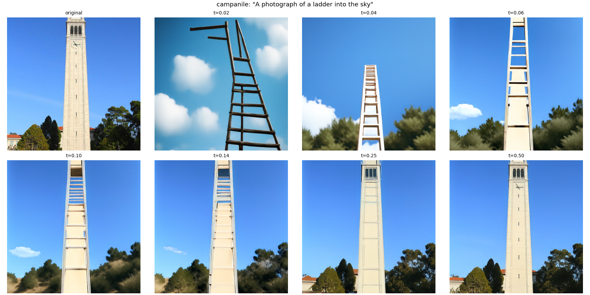
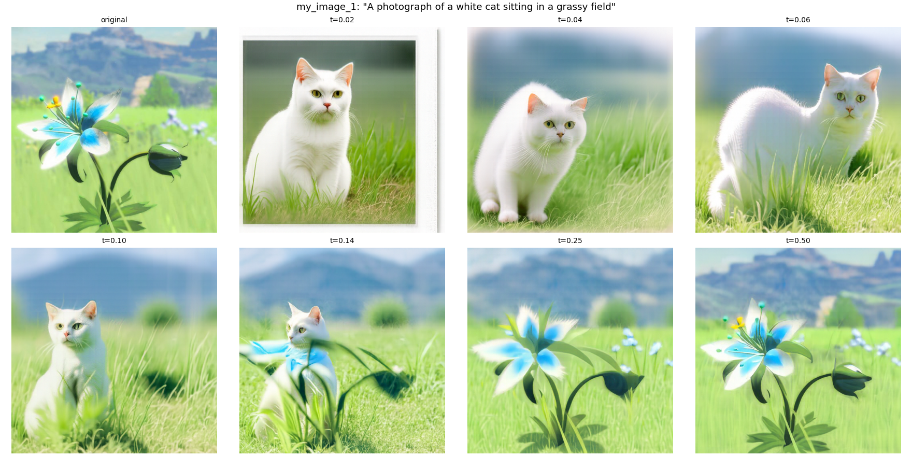
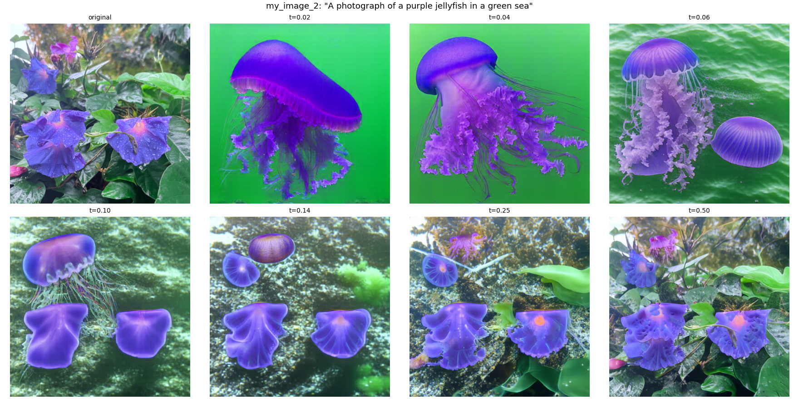
- Ladder: the prompt wins through t = 0.14, with the ladder inheriting the tower's taper and position; the Campanile takes over at 0.25.
- Cat: holds through 0.14 (at 0.14 a hybrid, the cat wears the flower's blue petals like a scarf); the flower returns at 0.25.
- Jellyfish: holds the prompt all the way to t = 0.50, with the original leaves around the jellyfish.
It comes down to how well the prompt matches the original's shape and color. Purple bell-shaped blooms already look like jellyfish, so prompt and image agree at every t. The ladder and cat are entirely new subjects that fight the original's shapes, so the original wins once enough of it is kept.
Editing Hand-Drawn and Web Images
t = 0.75Inputs: a web image (dewy white lily stock photo), a crewmate drawing (red color fill), and a cat drawing (line art on lined paper). The drawings were cropped square with paper-colored padding. Same settings and prompt as A.3.1.
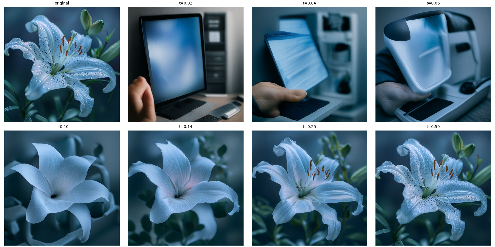
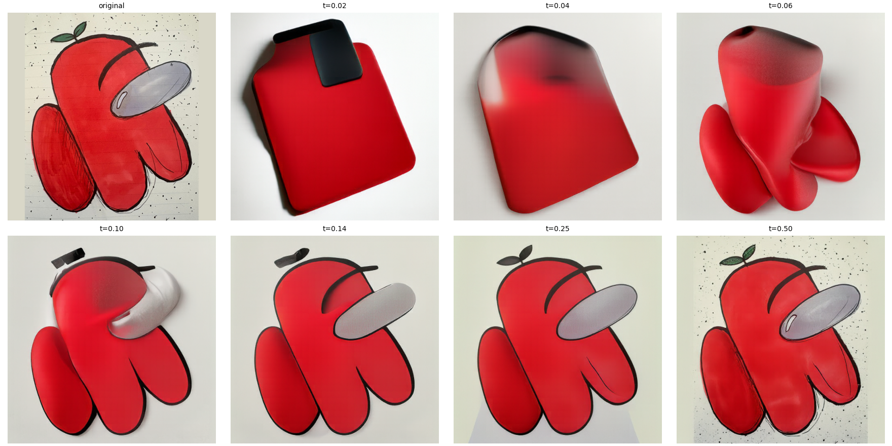
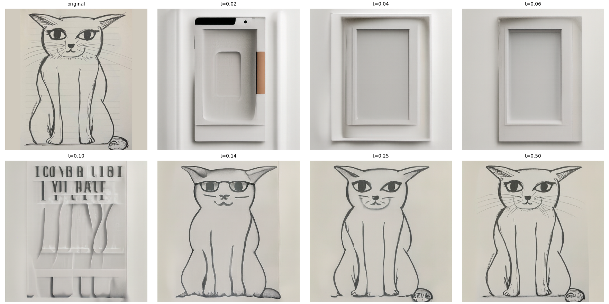
Lily: at 0.02 to 0.06 a computer monitor and devices, with a human hand in all three (connecting to the people bias from A.1.6 and A.2.1). At 0.10 to 0.14 a clean, simplified lily with no stamens or droplets; stamens return at 0.25, and water droplets and speckles at 0.50. It moved cleanly from desk scene to flower at 0.10, unlike the Silent Princess render.
Crewmate: low t became red objects (a phone case or tablet), then a glossy 3D figure at 0.06 to 0.10, and back to a drawing by 0.14. It kept its identity at lower t thanks to big features: one bold red color and a rounded rectangle shape.
Cat: low t became picture frames and devices, at 0.10 it hallucinated fake text, and at 0.14 the cat got glasses. Its thin lines can look like thin shadows, so an image made of small details only comes back at higher t. The text at 0.10 appears because thin lines on lined paper resemble where writing would be; photos of handwritten lined pages are likely very common.
Drawings stay drawings. At higher t the starting image fixes not just layout but medium and texture (paper, ink, flat color), and "a high quality photo" isn't strong enough to override it. Overall, the more photo-like the input, the smoother the transition back to the original.
Visual Anagrams
t = 0.83Each step averages the velocity for prompt A with the velocity for prompt B computed on the flipped image. The B velocity must be rotated back before averaging.
v = 0.5 * ( v_cfg(x, t, c_a) + rot180( v_cfg(rot180(x), t, c_b) ) )
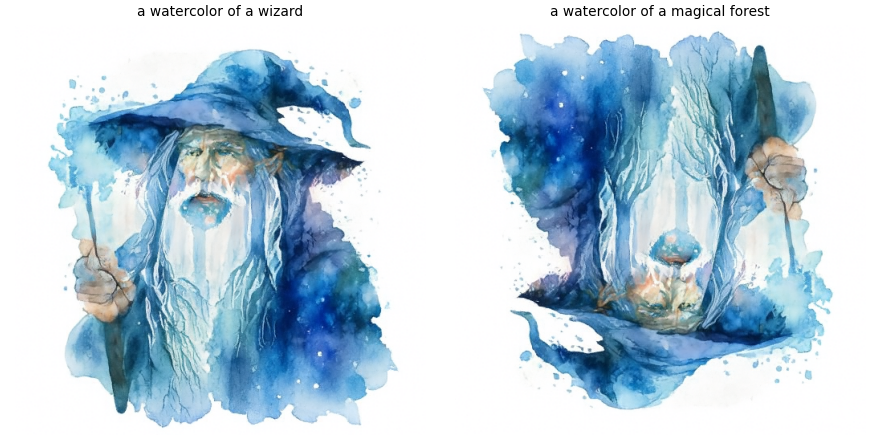
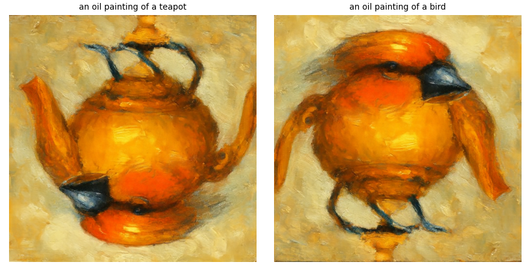
Hybrid Images
t = 0.90The low frequencies of one prompt's velocity are combined with the high frequencies of the other. Prompt a sets the distant structure and prompt b the close-up detail. Viewed at full size you see the close-up prompt; at small size, the distant one.
v = lowpass(v_a) + v_b - lowpass(v_b)
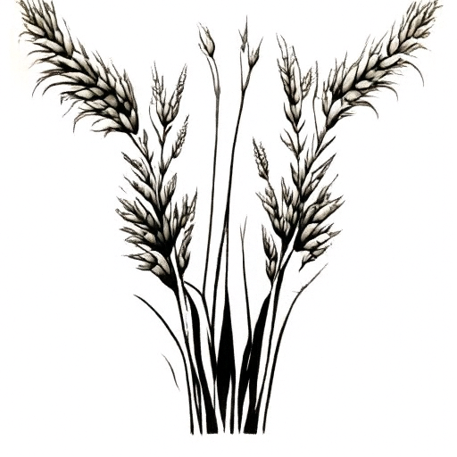